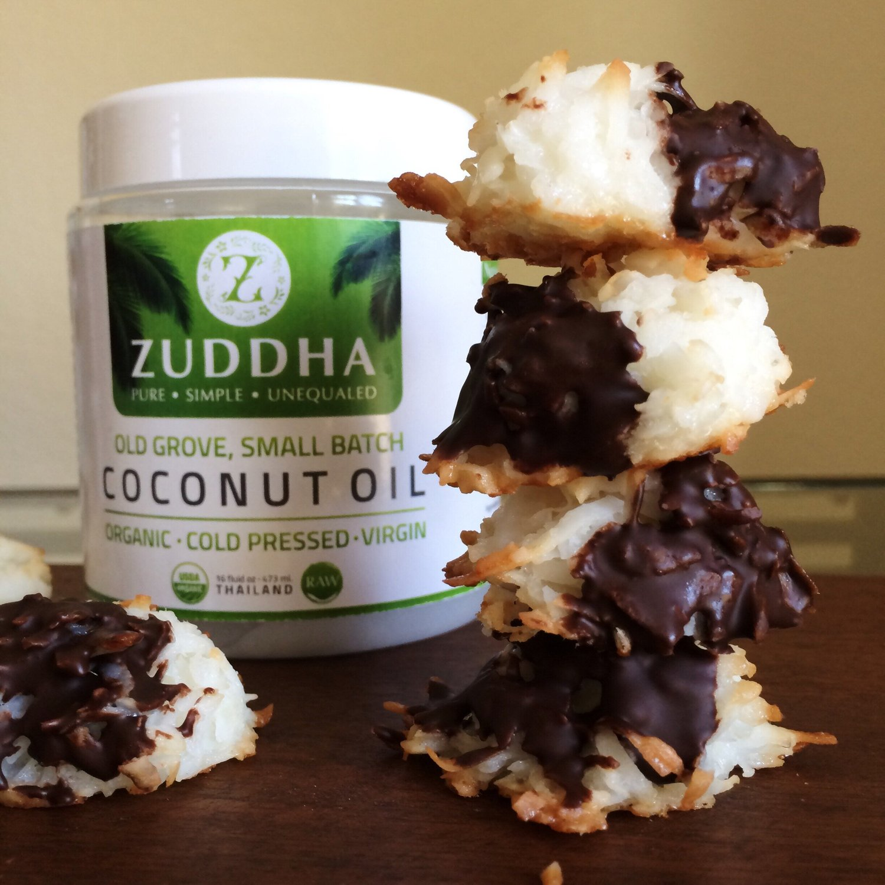
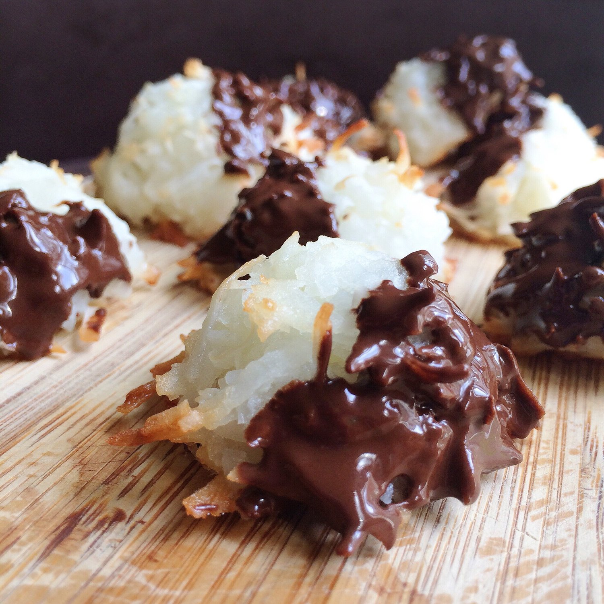

Coconut Macaroons with Zuddha Coconut Oil

Chocolate dipped coconut macaroonnssss!! I've always wanted to make macaroons, given my burning love for coconut :p, but I thought it'd be hard to make?? NO. It was crazy easy and delicious and so much yes. These kinda teleport you into another dimension of bliss & white lights & pillow clouds.
Coconut Macaroons
Makes: 10
-
1.5 cups shredded coconut
-
2 TBSP coconut oil
-
1/4 cup baking stevia
-
1/2 teaspoon vanilla extract
-
2 egg whites
In a bowl, mix your shredded coconut, coconut oil, baking stevia, and vanilla extract. The coconut should be evenly & lightly coated with the oil. In a small bowl, whisk the egg whites until stiff and airy (a hand blender works best here). Add the egg whites to the coconut mixture, and stir evenly.
Spray a baking sheet with nonstick spray. Dollop heaping Tablespoons of your macaroon mixture on the baking sheet to yield a total of 10 coconut macaroons.
Bake at 325 F for 18-20 mins, or until lightly browned on the tops. Let cool 10 minutes.
Dip the macaroons in a creamy mixture of 1 oz melted sugar free chocolate & 1/2 TBSP coconut oil. Enjoy!
